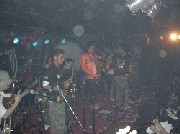

|
|||||||||
Despedida de La Coca Fernandez en Captain Blue |
|||||||||
|  | El sábado 5 de agosto pintaba para escuchar buena música en el abasto. Ritmos como el ska, el rock y el reggea eran las mejores opciones para compartir un par de birras con amigos. Captain Blue fue el lugar de encuentro. Cerca de la medianoche una gran cantidad de gente hacía cola en la puerta, recibidos por una gran bandera negra con letras blancas que anunciaba al anfitrión de la fecha. Adentro ya sonaba el rock callejero de MalPaso, primera banda de la noche, que acompañados de muchas banderas y coros de su gente daban comienzo a la fiesta. Lo siguió Dale Roska con mezclas de rock, ska y una muy buena puesta en escena. |
||||||||
| El fluido intercambio entre músicos y público animó tanto a sus seguidores de siempre como a aquellos que por primera vez disfrutaban de su música. El kiosco rasta, las cervezas, alrededor de 700 personas y algún que otro humo dulzón daban el clima ideal para la llegada que todos esperaban. Por fin 13 músicos sobre el escenario… La Coca empezaba su show. Los borrachos sonó al palo, y el público estallo en una mezcla de baile y pogo. Sonaron algunos temas nuevos y no faltaron los clásicos de la banda como Rastaman o Plegaria de mi tierra donde parecen borrarse las vayas que separan los músicos del público. Liderados por Sergio, el cantante encargado de dirigir la batuta, nadie duda en sentarse, bailar o saltar cuando la música lo pide. |
|||||||||
| Además de la buena onda con la gente, La Coca se caracteriza por demostrar su amistad con otras bandas y este sábado invitaron algunos colegas de Sayon y Dale Roska que fueron bien recibidos por todos. Tampoco faltó Sé que no tributo a Todos Tus Muertos, un habitué de la banda. Volá pimpoio daba algunas señales de que se acercaba el final, Babylon y Contraataque T.V. cerraron una lista de alrededor de 20 temas y casi 2 horas de ska, baile, humo y adrenalina. En adelante, el 17 de agosto La Coca Fernández viaja a Buenos Aires, y como todos sabemos… siempre espera un buen viaje después de una gran despedida. |
|||||||||
Revista Jamming |
|||||||||
Revista Jamming - Córdoba, Argentina - Registro de la Propiedad Intelectual en Trámite
|
|||||||||